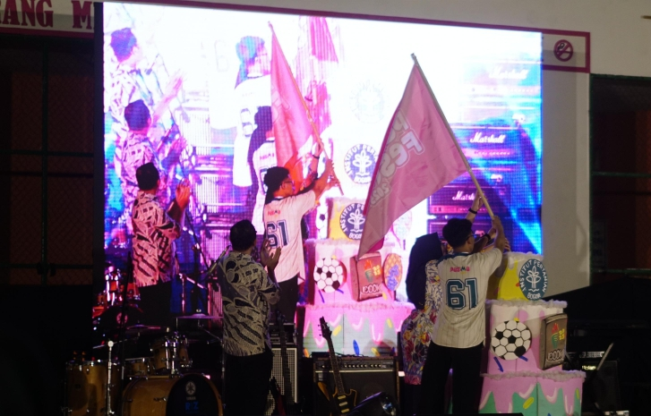
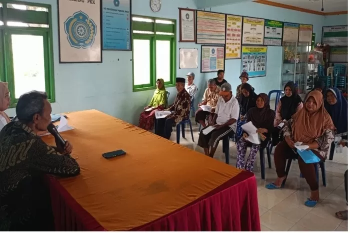
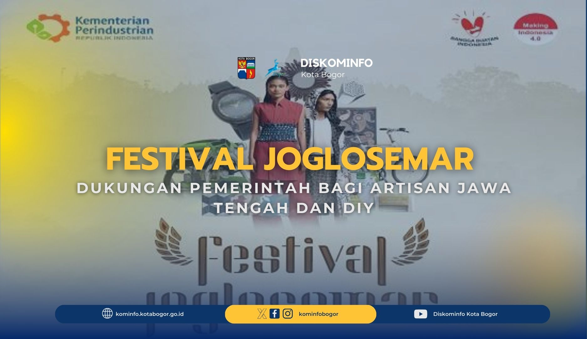
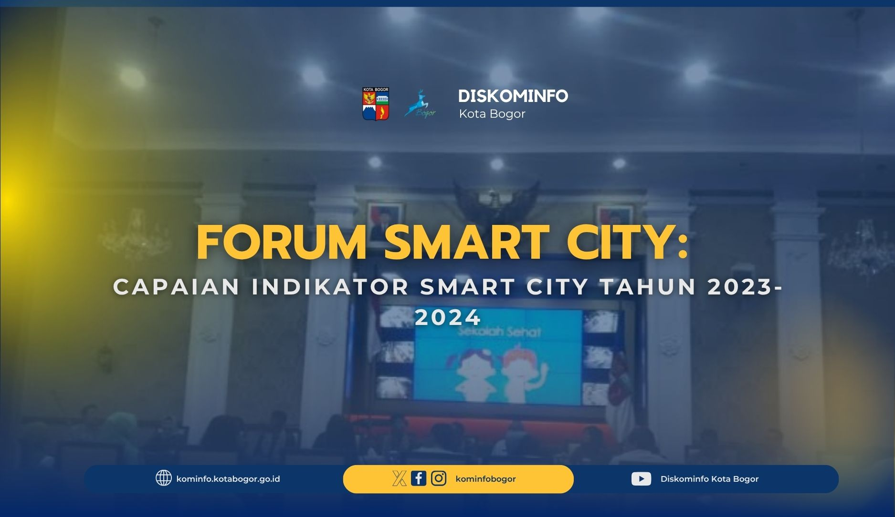
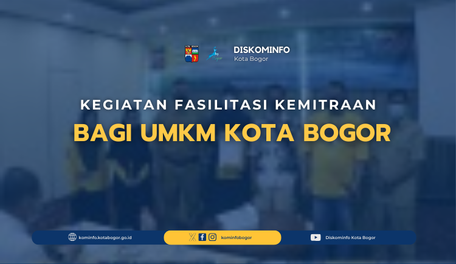
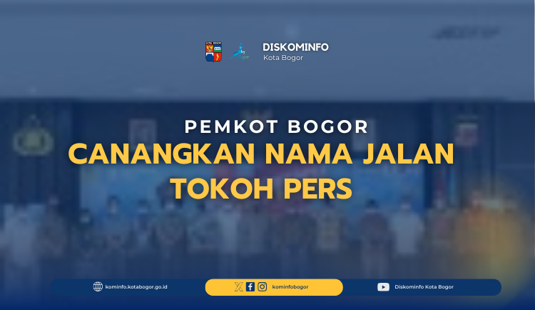

GALERI DISKOMINFO KOTA BOGOR
Berita Terbaru

Pembukaan Passion X Fesma 2025 “A Voyage Through the Echoes of Sweet’s Life”

KOMISI III DPRD KOTA BOGOR KUNJUNGI DISKOMINFO KOTA BOGOR

Kunjungan Kerja Kabupaten Semarang
Dari Tv ke Tiktok, Evolusi Hiburan Ramadan “Evolution of Ramadan from the Past to the Present”
Digital Doppelgänger: Saat AI Bisa Menjadi Kloning Diri Kita
Doomscrolling, Perangkap Digital Yang Harus Disadari

Festival Joglosemar Dukungan Pemerintah Bagi Artisan Jawa Tengah dan DIY”
Inovasi UMKM Kota Bogor Dalam Meningkatkan Branding Di Media Sosial

Forum Smart City: Capaian Indikator Smart City Tahun 2023-2024
Hal-Hal Yang Tidak Boleh Dibagikan kepada Chatbot AI

Kegiatan Fasilitasi Kemitraan bagi UMKM Kota Bogor
Kunjungan Kerja DPRD Kota Banjarmasin di Kota Bogor
Kunjugan Kerja Komisi III DPRD Kabupaten Pandeglang
Kunjungan Kerja Setwan Kabupaten Bogor
Maraknya Penipuan Online, Cara Kerja dan Cara Menghindari
Membangun Brand Awareness melalui Media Sosial

Mengenal Deepfake dan Ancaman Nyatanya di Era Digital

Pemkot Bogor Canangkan Nama Jalan Tokoh Pers